Cada servicio tiene alcance, productos y entregables propios. Da clic en "Conocer más" para ver el detalle completo.
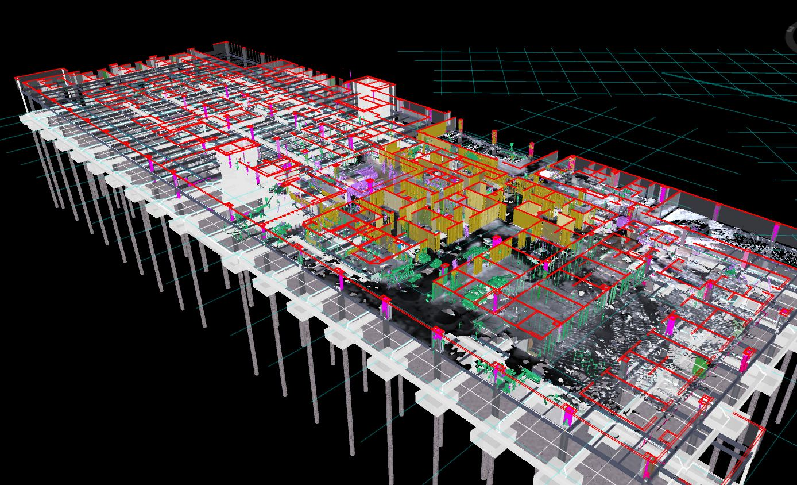
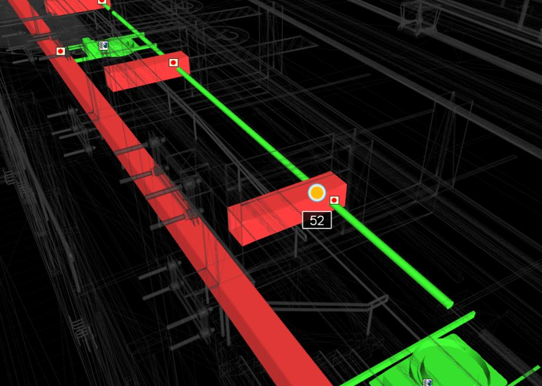
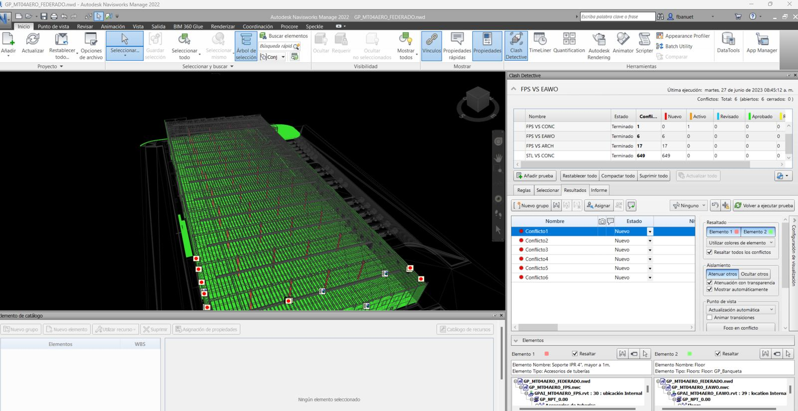
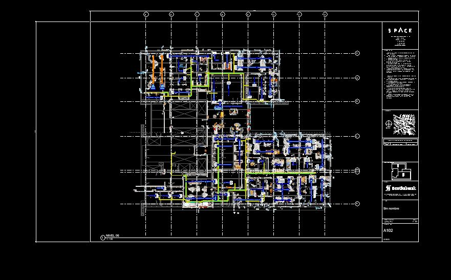
Coordinamos y digitalizamos el ciclo de vida del diseño e ingeniería, básica y a detalle, así como las etapas iniciales del proyecto desde conceptual hasta ejecutivo, mediante la plataforma Autodesk Construction Cloud. Reducimos el riesgo y la incertidumbre del proyecto mediante la detección de interferencias y desvíos de diseño con clash detection, revisamos ingeniería y conciliamos los planos con el modelo BIM asegurando constructibilidad, trazabilidad y coherencia, velando siempre por la factibilidad del proyecto. Integramos a todos los interesados del proyecto en sesiones concurrentes de toma de decisiones, revisión y solución de incidencias, así como la generación de boletines y RFIs.
Conocer más →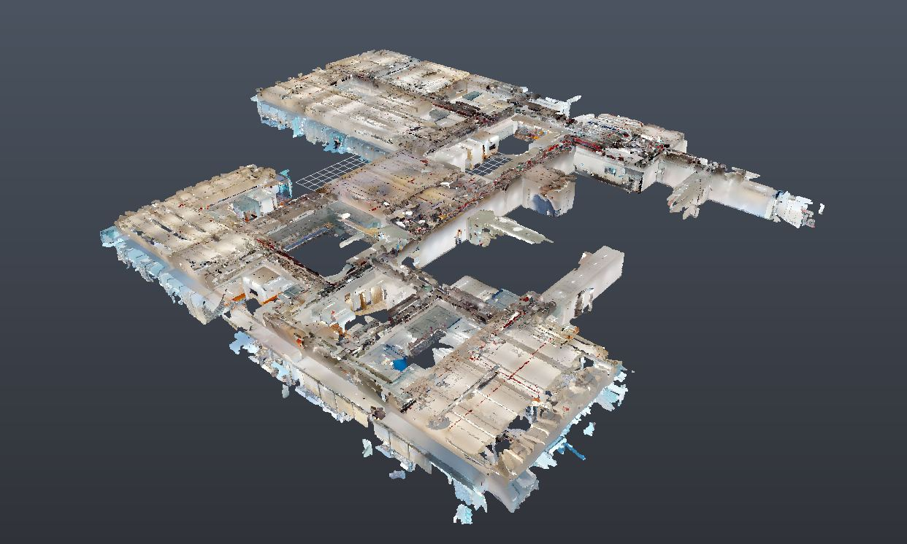
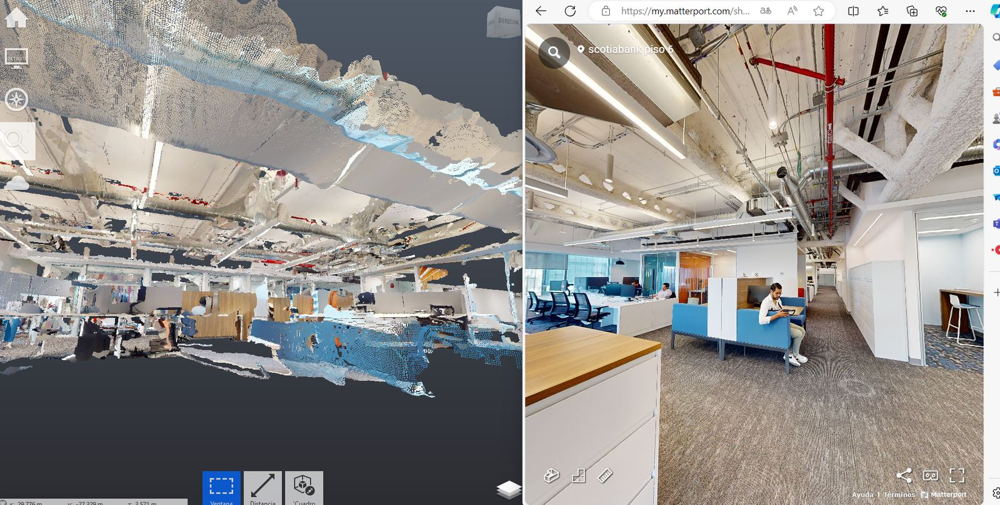
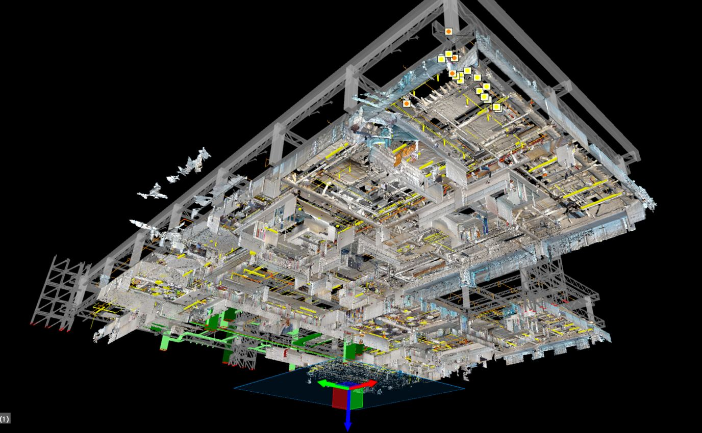
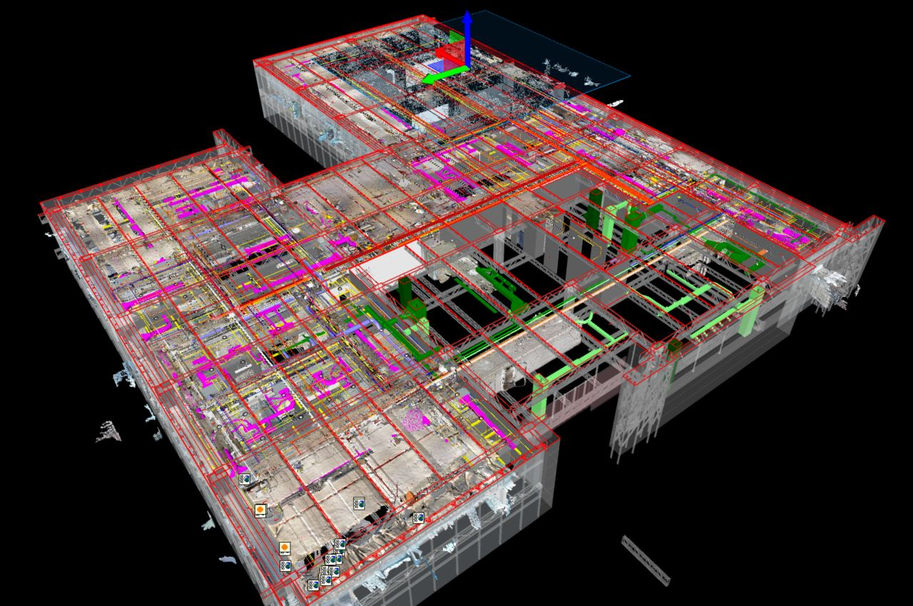
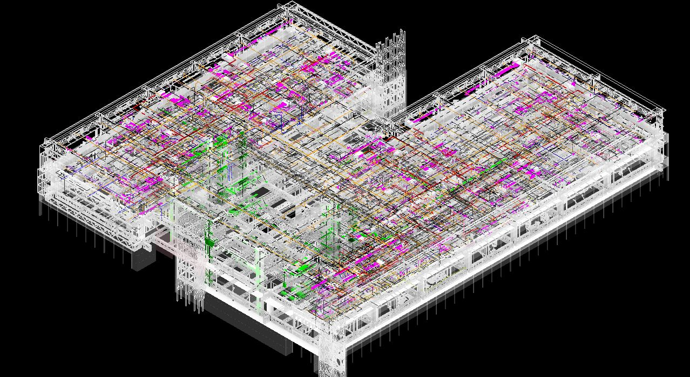
Digitalizamos el avance real y la producción diaria de los subcontratos del proyecto para identificar desviaciones a la ruta crítica, identificar incidencias, realizar cuantificaciones y libros de materiales, especificaciones, obtener métricas de avance y asegurar el cierre de los subcontratos con nuestro sistema Asbuilt. Realizamos registros de avance y captura de la realidad para el sitio con nuestras tecnologías de captura (drones, láser scanning y cámaras 360°) exclusivamente por contrato en proyecto y por especialidad.
Conocer más →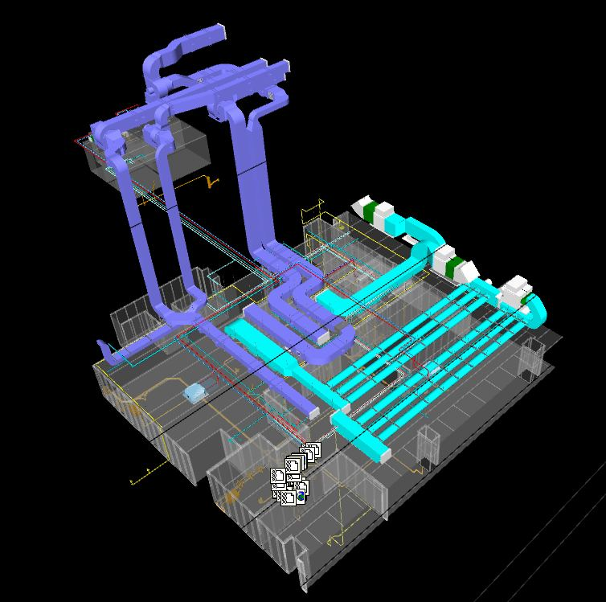
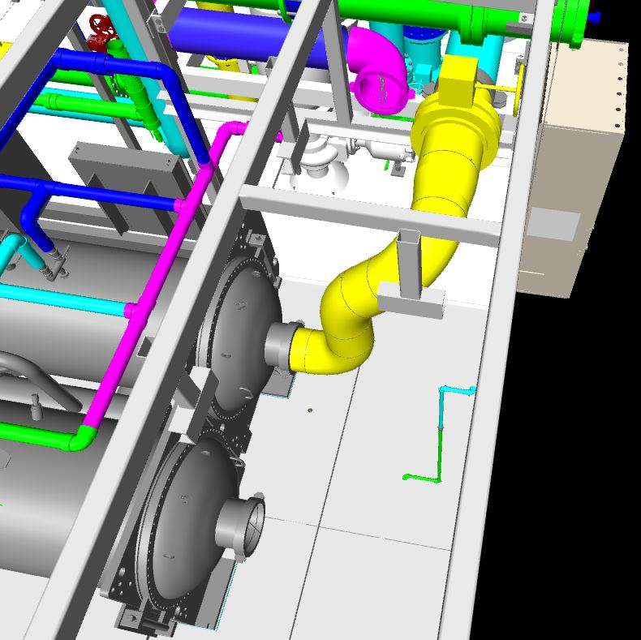
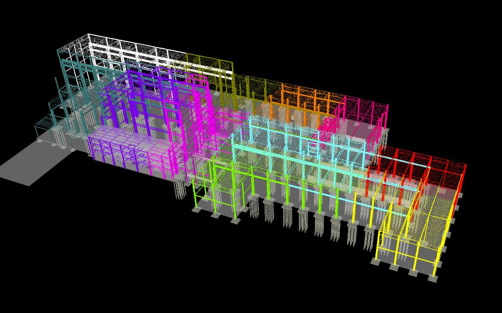
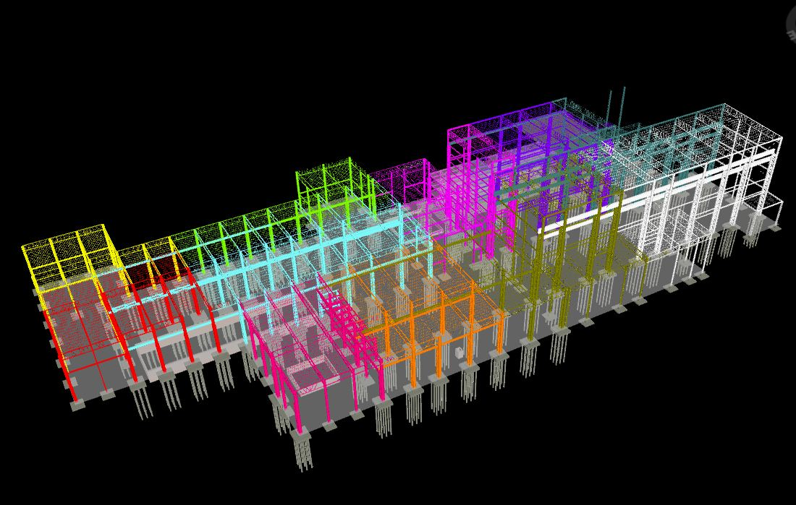

Desarrollamos modelos operativos para todas las etapas de proyecto, desde nivel conceptual hasta fabricación y asbuilt. Facilitamos las familias y su desarrollo, asegurándonos de cada uso BIM y del cumplimiento de estándares y del plan de ejecución BIM. Traducimos planos 2D en modelos detallados con la información técnica y física.
Conocer más →


Digitalizamos las condiciones existentes de la obra y del sitio de proyecto, asegurando la captura digital de los trabajos ejecutados para una representación y traducción fiel de la realidad actual en el gemelo digital físico. Utilizamos tecnología LiDAR, fotografías y fotogrametría con dron para conciliar el modelo digital con las condiciones reales, asegurando una entrega final precisa y conciliada para el cierre de proyecto y liberación de recursos.
Conocer más →


Realizamos el desarrollo y acompañamiento de las fases avanzadas de proyecto: desarrollo de diseño y desarrollo de documentos de construcción de las distintas disciplinas. Aseguramos la generación de planos y documentos constructivos de arquitectura, estructura e ingenierías. Nuestros ingenieros especializados y arquitectos brindan soluciones técnicas para la coordinación de proyecto y soluciones constructivas que permitan la entrega en tiempo y forma del proyecto.
Conocer más →Integramos agentes de inteligencia artificial a las herramientas operativas diarias — Revit, Navisworks, Excel, Microsoft Project, ERP's, CDE's y CRM's — mediante MCP (Model Context Protocol). Explicamos el potencial de la IA generativa y cómo conectarla de forma controlada a tu operación, sin necesidad de conocimientos técnicos previos.
Conocer más →Próximamente con el mismo nivel de detalle.
Cuantificación automatizada de obra (BOQ) ligada a cronograma y costo, para control de avance con datos, no estimaciones.
Agenda un diagnóstico inicial sin costo y define el alcance con nosotros.